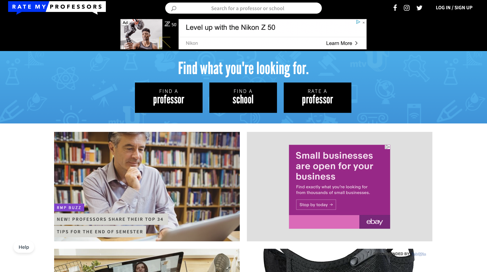

The LUC CS Course Reviewer is a website where students, specifically in the Loyola University Chicago department of Computer Science (CS), could leave and view reviews for all undergraduate CS courses. The site features a search page on which it opens, and each course page features the course description, prerequisites, a place to create a review and the reviews already made. Our group chose to build this site because sometimes the description on the official CS Course Catalog does not exactly match what students experience and learn in class. We wanted a place where Loyola students could be comfortable leaving reviews of courses to help other students decide if that would be something they would be interested in taking.
5 members
Developer, Designer & Illustrator || Research, Mockups, Course CSS, general HTML, Info page (CSS & HTML)
Jan 2020 to April 2020 (4 mos)
Website, Final Report
Atom, Firebase, Github
This site is only locally hosted, to view the solution please head to this projects github page.
Below are specific links to the github commits I made.
Initial changes: Addition of the homepage background image, initial HTML & CSS for first course page and homepage HTML & CSS edits.
Updates and new info page: Changes to course HTML & CSS, initial information page HTML & CSS, additon of info button on homepage.
Course and JS updates: Small changes to HTML of course page and small javascript change.
Course pages and finishing info page: My section of HTML course pages to add to the project, JS needed for the course pages and info page HTML & CSS.
Info page updates: Updates to the info pages HTML & CSS.
Fixes to homepage: Fixed missing links to course pages in the search.
Fixes to JS: Fixed missing courses in JS used for linking to the database.
Our project was inspired by the website: Rate My Professor(RMP), where students from around the nation can write reviews about their professors. While we liked this concept, we thought it could be more interesting to see student reviews of courses, specifically in Loyola's Computer Science Department. We decided to narrow it down this much because the CS Department's official course catalog has some outdated class descriptions. Since we do not have the power to update the descriptions, are next thought was instead to get the students perspective. The concept is fairly similar to that of RMP, with less ads and a simpler design.
Our group chose to stay with official Loyola colors because we wanted there to be that visual connect between our site and Loyola. This way it would eliminate questions if this was meant for Loyola students or everyone. We decided that it would be ok to play around with the font choice since we already have a visual connection to Loyola.
In our original mockups, we decided to have a more Google search feel to the homepage. We also were planning on using the Loyola typefaces, but decided to stray away from this. Our course page is fairly similar to the mockup one but we changed around some of the features and left others out.
The site map for this website is fairly simple. The site opens onto the homepage, and by clicking the info button in the top right corner you will navigate to the information page. The other direction to go is to type a course code into the search bar and go to any of the 80+ CS courses offered at Loyola for undergrads to read and write reviews.